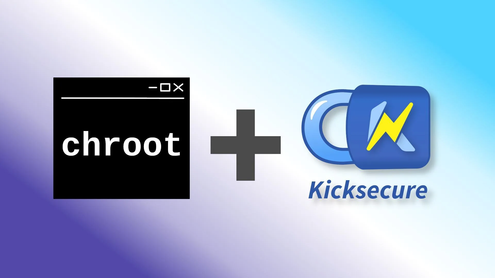

We believe security software like Kicksecure needs to remain Open Source and independent. Would you help sustain and grow the project? Learn more about our 14 year success story and maybe DONATE!

You can install Kicksecure on top of your existing Debian (based) Linux installation inside a chroot.
Introduction
Understanding the Basics of Creating and Using a Chroot Environment
Creating and using a chroot is like building a small, isolated Linux system within your main system. It's a powerful tool for various purposes, from development to testing. While the concept might seem overwhelming at first, it boils down to a few key commands and a basic understanding of Linux file systems.
In the world of Linux, mastering the creation and use of a chroot (change root) environment is a valuable skill. This process involves two fundamental steps: creating the chroot and then operating within it.
Before we can discuss the chroot (change root), we first need to
define what the root directory is. In Linux, the root directory path is
symbolized by only a single / (forward slash). See also
ls / . It contains other
directories you might already know, such as /etc,
/usr, /lib, /var, and so
forth.
Creating the Chroot Environment
The chroot environment is essentially a miniature version of a Linux system within your existing system.
To create this environment, you can use tools like
debootstrap or mmdebstrap. These tools download a
Linux distribution (like Debian or others from different repositories
such as Kicksecure) and establish a root file system in a designated
folder on your hard drive. For instance, you might create a chroot
folder named ~/kicksecure-lxqt-chroot. That folder would
then contain the same essential directories, /etc,
/usr, and so forth. Here's an example of how that folder
structure would look like.
~/kicksecure-lxqt-chroot/etc~/kicksecure-lxqt-chroot/usr~/kicksecure-lxqt-chroot/lib- etc.
This folder structure gets created by the chroot creation tool. There's no need for the user to fully understand the folder structure or process. The process is straightforward, typically requiring just a single command line instruction.
Using the Chroot Environment
Once the chroot folder has been set up, you can start working inside it using commands like chroot or systemd-nspawn.
An example of entering this environment would be:
sudo chroot ~/kicksecure-lxqt-chroot zsh. This command
changes the root from the main / to
~/kicksecure-lxqt-chroot and starts the Z shell (zsh) in
this new context. But don't worry. This does not change the root for
your real Linux installation. It only changes the root for the terminal
emulator which you are currently using. The rest of your system remains
unaffected by this.
You could also use other shells such as bash or
applications as needed.
It's worth noting that more advanced setups might involve emulators like QEMU for a fully emulated operating system, but this would require additional steps like installing a kernel in the chroot.
chroot Creation
Qubes Notes
Only users of Qubes need to consider these notes in this chapter.
Users that don't use Qubes or don't know what Qubes is should skip this chapter.
TODO: elaborate
- nosuid / nodev can cause issues?
- default private image size (/home folder) is too small for Kicksecure LXQt
Install Required Tools
Install package(s)
mmdebstrap apt-transport-https apt-transport-tor tor curl
following these instructions:
1 Platform specific notice.
- Kicksecure: No special notice.
- Kicksecure-Qubes: In Template.
2 Update the package lists and upgrade the system.
sudo apt update && sudo apt full-upgrade
3
Install the
mmdebstrap apt-transport-https apt-transport-tor tor curl
package(s).
Using apt command line --no-install-recommends option is in
most cases optional.
sudo apt install --no-install-recommends mmdebstrap apt-transport-https apt-transport-tor tor curl
4 Platform specific notice.
- Kicksecure: No special notice.
- Kicksecure-Qubes: Shut down Template and restart App Qubes based on it as per Qubes Template Modification.
5 Done.
The procedure of installing package(s)
mmdebstrap apt-transport-https apt-transport-tor tor curl
is complete.
Add Signing Key
It is required to add the signing key on the host because
mmdebstrap will need it.
(Users of Kicksecure and Whonix could skip this step since the signing key is there by default.)
The key could be removed at the end. (Except Kicksecure and Whonix should not do this unless they upgrade from source code.)
Complete the following steps to add the Kicksecure Signing Key to the system's APT keyring.
Open a terminal.
1
Package curl needs to be installed.
Install package(s) curl following these
instructions:
1 Platform specific notice.
- Kicksecure: No special notice.
- Kicksecure-Qubes: In Template.
2 Update the package lists and upgrade the system.
sudo apt update && sudo apt full-upgrade
3
Install the curl package(s).
Using apt command line --no-install-recommends option is in
most cases optional.
sudo apt install --no-install-recommends curl
4 Platform specific notice.
- Kicksecure: No special notice.
- Kicksecure-Qubes: Shut down Template and restart App Qubes based on it as per Qubes Template Modification.
5 Done.
The procedure of installing package(s) curl is
complete.
2 Download Kicksecure Signing Key. [2]
Choose your operating system.
If you are using Debian, run.
Choose TLS or onion.
TLS (Debian)
TLS.
sudo curl --tlsv1.3 --output /usr/share/keyrings/derivative.asc --url https://www.kicksecure.com/keys/derivative.asc

onion (Debian)
Note: Downloading over onion requires an already functional system Tor.
sudo curl --proxy socks5h://127.0.0.1:9050 --output /usr/share/keyrings/derivative.asc --url http://www.w5j6stm77zs6652pgsij4awcjeel3eco7kvipheu6mtr623eyyehj4yd.onion/keys/derivative.asc
If you are using a Qubes Debian App Qube, run.
Choose TLS or onion.
TLS (Qubes-App-Qube)
TLS.
sudo curl --tlsv1.3 --output /usr/share/keyrings/derivative.asc --url https://www.kicksecure.com/keys/derivative.asc
onion (Qubes-App-Qube)
Note: Downloading over onion requires an already functional system Tor.
sudo curl --proxy socks5h://127.0.0.1:9050 --output /usr/share/keyrings/derivative.asc --url http://www.w5j6stm77zs6652pgsij4awcjeel3eco7kvipheu6mtr623eyyehj4yd.onion/keys/derivative.asc
If you are using a Qubes Debian Template, run.
Choose TLS or onion.
TLS (Qubes-Template)
TLS.
sudo http_proxy=http://127.0.0.1:8082 https_proxy=http://127.0.0.1:8082 curl --tlsv1.3 --output /usr/share/keyrings/derivative.asc --url https://www.kicksecure.com/keys/derivative.asc
onion (Qubes-Template)
Note: Downloading over onion requires an already functional system Tor.
sudo http_proxy=http://127.0.0.1:8082 https_proxy=http://127.0.0.1:8082 curl --output /usr/share/keyrings/derivative.asc --url http://www.w5j6stm77zs6652pgsij4awcjeel3eco7kvipheu6mtr623eyyehj4yd.onion/keys/derivative.asc
3 Signing key verification.
Optional. Recommended for Advanced Users only. If you have a good understanding of Verifying Software Signatures you can check the Kicksecure Signing Key for additional security.
4 Done.
The procedure of adding the Kicksecure signing key is now complete.
Set Variables
File /etc/hostname must exist. [3]
sudo touch /etc/hostname
Set Variables
Note: You could also replace kicksecure-vm-gui-lxqt with
kicksecure-vm-server.
package=kicksecure-vm-gui-lxqt repo=trixie path_to_chroot=~/kicksecure-lxqt-chroot path_to_temp_sources=~/temp-sources.sources
APT Sources List
Create temporary APT sources list for mmdebstrap.
echo " Types: deb URIs: https://deb.debian.org/debian-security Suites: trixie-security Components: main contrib non-free Enabled: yes Signed-By: /usr/share/keyrings/debian-archive-keyring.gpg
Types: deb URIs: https://deb.debian.org/debian Suites: trixie Components: main contrib non-free Enabled: yes Signed-By: /usr/share/keyrings/debian-archive-keyring.gpg
Types: deb URIs: https://deb.kicksecure.com Suites: $repo Components: main contrib non-free Enabled: yes Signed-By: /usr/share/keyrings/derivative.asc " > "$path_to_temp_sources"
APT Cache
Optional. If you are interested, please press Expand on the right side.
This shouldn't be done unless you are behind a firewall since apt-cacher-ng will by default listen on all network interfaces.
 apt-cacher-ng is known to be buggy and unreliable. Furthermore, it is
not known if these instructions will work now that Kicksecure uses
deb822-style apt sources almost everywhere. Proceed at your own
risk.
apt-cacher-ng is known to be buggy and unreliable. Furthermore, it is
not known if these instructions will work now that Kicksecure uses
deb822-style apt sources almost everywhere. Proceed at your own
risk.
Install package(s) apt-cacher-ng following these
instructions:
1 Platform specific notice.
- Kicksecure: No special notice.
- Kicksecure-Qubes: In Template.
2 Update the package lists and upgrade the system.
sudo apt update && sudo apt full-upgrade
3
Install the apt-cacher-ng package(s).
Using apt command line --no-install-recommends option is in
most cases optional.
sudo apt install --no-install-recommends apt-cacher-ng
4 Platform specific notice.
- Kicksecure: No special notice.
- Kicksecure-Qubes: Shut down Template and restart App Qubes based on it as per Qubes Template Modification.
5 Done.
The procedure of installing package(s) apt-cacher-ng is
complete.
Set apt_cacher_ng_maybe variable. [4]
http_proxy=http://127.0.0.1:3142
Create apt-cacher-ng https compatible sources.list file.
echo " deb http://HTTPS///deb.debian.org/debian-security/ trixie-security main contrib non-free deb http://HTTPS///deb.debian.org/debian trixie main contrib non-free deb [signed-by=/usr/share/keyrings/derivative.asc] http://HTTPS///deb.kicksecure.com $repo main contrib non-free " > "$path_to_temp_sources"
Run mmdebstrap
Run mmdebstrap. [5]
sudo \
$apt_cacher_ng_maybe \
SECURITY_MISC_INSTALL=force \
DERIVATIVE_APT_REPOSITORY_OPTS=stable \
mmdebstrap \
--verbose \
--variant=required \
--include $package \
$repo \
"$path_to_chroot" \
"$path_to_temp_sources"
Chroot Post Processing
Delete the chroot's temporary /etc/apt/sources.list.
[6]
sudo rm "$path_to_chroot/etc/apt/sources.list"
sudo rm "$path_to_chroot/etc/apt/sources.list.d/0000temp-sources.*"
Host Cleanup
Optional. You can delete the signing key from the host.
If you are interested, please press Expand on the right side.
This is only useful for users not using Kicksecure as their host operating system.
Users of Kicksecure must skip this.
sudo rm /etc/apt/trusted.gpg.d/derivative.gpg
Usage
Simple Classic Chroot Method
sudo chroot ~/kicksecure-lxqt-chroot zsh
systemd-nspawn Method
Install systemd-nspawn
sudo apt install systemd-container
systemd-nspawn Simple Chroot
sudo systemd-nspawn -D ~/kicksecure-lxqt-chroot
systemd-nspawn Boot Chroot CLI Only
sudo systemd-nspawn -D ~/kicksecure-lxqt-chroot /sbin/init
Troubleshooting
sudo
sudo su
If seeing this error when using "sudo su".
sudo: effective uid is not 0, is /usr/bin/sudo on a file system with the 'nosuid' option set or an NFS file system without root privileges?- Qubes users:
- If using mounting home with nosuid.
sudo mount -o remount,suid /rw/home
networking
systemd-networkd must be enabled on both, the host and inside the VM.
sudo systemctl enable systemd-networkd
sudo systemctl start systemd-networkd
systemd-nspawn Boot Chroot with GUI Support
This is unfinished. Unspecific to Kicksecure. Could be resolved as per Self Support First Policy.
xhost +local:
sudo systemd-nspawn --setenv=DISPLAY=$DISPLAY -D ~/kicksecure-lxqt-chroot /sbin/init
Exit systemd-nspawn Chroot
To leave the chroot, press and keep holding key CTRL and
press key 5 quickly 3 times within 1 second.
[7]
Limitations of systemd-nspawn based Chroot
Despite these limitations, systemd-nspawn should
probably be preferred over classic chroot. Depends on what
you are trying to accomplish.
- sdwdate (and Boot Clock
Randomization) cannot work inside
systemd-nspawn. - Tor will fail to start inside
systemd-nspawnchrootif Tor is already running on the host in default config (local listen port9050). But that shouldn't matter. Thesystemd-nspawnchrootwill use the host's Tor in this case.systemd-nspawnhas also option to run private networking but these have not been researched for Kicksecure yet.
Footnotes
- *
apt-transport-httpsis required for some older Debian based Linux distributions that have not integrated https support into APT yet. If not available in your distribution, it can be safely ignored. *apt-transport-toris required because Kicksecure/anon-apt-sources-list
is using
Kicksecure/anon-apt-sources-list
is using tor+https. Otherwise we would see the following error.I: cleaning package lists and apt cache... Reading package lists... E: The method driver /usr/lib/apt/methods/tor+https could not be found. E: The method driver /usr/lib/apt/methods/tor+https could not be found. E: The method driver /usr/lib/apt/methods/tor+https could not be found. E: Failed to fetch tor+https://deb.debian.org/debian-security/dists/buster/updates/InRelease E: Failed to fetch tor+https://deb.debian.org/debian/dists/buster/InRelease E: Failed to fetch tor+https://deb.kicksecure.com/dists/buster-developers/InRelease E: Some index files failed to download. They have been ignored, or old ones used instead. E: apt --option Dir::Etc::SourceList=/dev/null update -oAPT::Status-Fd=<$fd> -oDpkg::Use-Pty=false failed*
toris required soapt-transport-torcan use Tor. Otherwise we would see the following error.I: cleaning package lists and apt cache... Err:1 tor+https://deb.debian.org/debian-security buster/updates InRelease Could not connect to 127.0.0.1:9050 (127.0.0.1). - connect (111: Connection refused) Err:2 tor+https://deb.debian.org/debian buster InRelease Unable to connect to 127.0.0.1:9050: Err:3 tor+https://deb.kicksecure.com buster-developers InRelease Could not connect to 127.0.0.1:9050 (127.0.0.1). - connect (111: Connection refused) Reading package lists... W: Failed to fetch tor+https://deb.debian.org/debian-security/dists/buster/updates/InRelease Could not connect to 127.0.0.1:9050 (127.0.0.1). - connect (111: Connection refused) W: Failed to fetch tor+https://deb.debian.org/debian/dists/buster/InRelease Unable to connect to 127.0.0.1:9050: W: Failed to fetch tor+https://deb.kicksecure.com/dists/buster-developers/InRelease Could not connect to 127.0.0.1:9050 (127.0.0.1). - connect (111: Connection refused) W: Some index files failed to download. They have been ignored, or old ones used instead.* Actually package
apt-transport-torrecommends packagetorbut listing it here anyhow for those using APT with parameter--no-install-recommends. *apt-transport-httpsis suggested below to download the signing key. - See Secure Downloads
to understand why
curland the parameters--tlsv1.3are used instead ofwget.
Placing an additional signing key into folder/usr/share/keyringsby itself alone has no impact on security as this folder is not automatically used by Debian's APT by default. Only when an APT sources list configuration file points to folder/usr/share/keyringsusing thesigned-bykeyword the signing key will be actually used. Therefore deleting keys in/usr/share/keyringsis optional if intending to disable an APT repository. See also APT Signing Key Folders. - Fixed in
mmdebstrap0.5.0. Quote changelog:
Therefore no longer required in Debiando not copy /etc/resolv.conf or /etc/hostname if the host system doesn't have them
bullseye. - No longer working. apt_cacher_ng_maybe="--aptopt='Acquire::http { Proxy \"http://127.0.0.1:3142\";; }' --aptopt='Acquire::https { Proxy \"http://127.0.0.1:3142\";; }' --aptopt='Acquire::tor { Proxy \"http://127.0.0.1:3142\";; }'"
- *
debootstrapcannot be used since it is a single-mirror Debian chroot creation tool. I.e. it cannot use multiple APT repositories at the same time. And Kicksecure APT repository does not ship any packages available from packages.debian.org. Therefore usingmmdebstrapwhich is a multi-mirror Debian chroot creation. ** If you cannot usemmdebstrapeither (cross platform builds?), you could first create a Debian chroot usingdebootstrap(or anything) and then install a Kicksecure meta package manually inside the chroot. * Whonix: addanon_shared_inst_tb=open - During chroot build process the following files were already
created. *
/etc/apt/sources.list.d/debian.sources*/etc/apt/sources.list.d/derivative.sources - https://unix.stackexchange.com/questions/577065/connected-to-container-mycontainer-press-three-times-within-1s-to-exit-sessi
Categories: Documentation